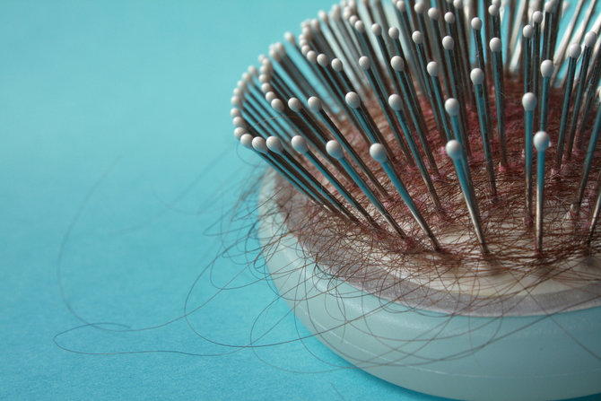

Berbagai tips untuk kamu dan rambutmuuu
Hanya Untukmu ^_^ :3

Bagi yang mengalami gejala penipisan rambut atau kerontokan, perawatan dari luar saja tak cukup. Sebaiknya diimbangi dengan nutris penyubur rambut. Berikut ini cara-cara merawat rambut rontok agar subur dan lebat.
1. Rawat dengan tonik daun jambu. Dilansir StyleCraze, tonik daun jambu kaya akan vitamin B, vitamin C, dan zat besi yang baik untuk menjaga kesehatan rambut serta memiliki kandungan analgesik, anti-inflamasi, anti-mikroba, dan antioksidan. Buatlah tonik dari segenggam daun jambu biji yang direbus bersama air. Semprotkan di kulit kepala setelah keramas dan lakukan pemijatan.
2. Pakai masker bawang merah dan bawang putih. Buat masker rambut dari sari bawang putih dan bawang merah. Dilansir StyleCraze, bawang merah kaya vitamin A, vitamin C, vitamin E, dan sulfur. Bawang putih mengandung tembaga dan zat besi yang penting untuk merangsang pertumbuhan rambut.
3. Konsumsi suplemen penyubur rambut. Dilansir Vitamins e-Store, suplemen biotin (vitamin B7), vitamin C, vitamin D, vitamin E, selenium, lycopene, lysine, dan minyak ikan bisa membantu merangsang pertumbuhan rambut dan mengendalikan kerontokan.
Umumnya kaum pria tidak ingin perawatan yang ribet, termasuk untuk rambut. Berikut ini beberapa cara merawat rambut yang sesuai untuk pria.
1. Jangan keramas setiap kali mandi. Kebiasaan ini bisa membuat rambut rontok dan keseimbangan pH kulit kepala tak seimbang. Keramas dua hari sekali saja.
2. Pakai kondisioner. Kondisioner perlu untuk menjaga agar rambut tidak kaku dan tetap sehat.
3. Jangan pakai pomade terlalu sering. Pomade yang tidak berbasis air bisa membuat rambut rapuh.
4. Gunakan minyak rambut alami. Minyak kemiri atau urang-aring sekali waktu akan menjadikan rambut sehat dan tidak cepat beruban.
Agar rambut tak 'liar' seperti surai singa, Anda yang memiliki rambut mengembang bisa mencoba beberapa cara merawat rambut di bawah ini.
1.Gunakan vitamin rambut. Melembutkan rambut yang terasa kering dan kasar dalam waktu singkat.
2. Bilas dengan cuka apel. Dilansir Boldsky, sifat asam pada cuka apel berfungsi untuk menyeimbangkan pH pada kulit kepala dan batang rambut. Dengan demikian, rambut tidak akan terlalu kering dan mengembang. Campurkan cuka apel dan air dengan perbandingan yang sama. Tuangkan ke rambut, kemudian diamkan selama 5 menit sebelum dibilas.
3. Pakai masker alpukat & yogurt. Mengandung minyak pelembap alami dan nutrisi yang ampuh sebagai kondisioner dan masker rambut.